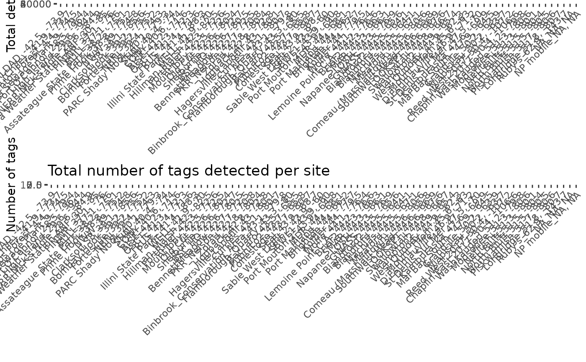
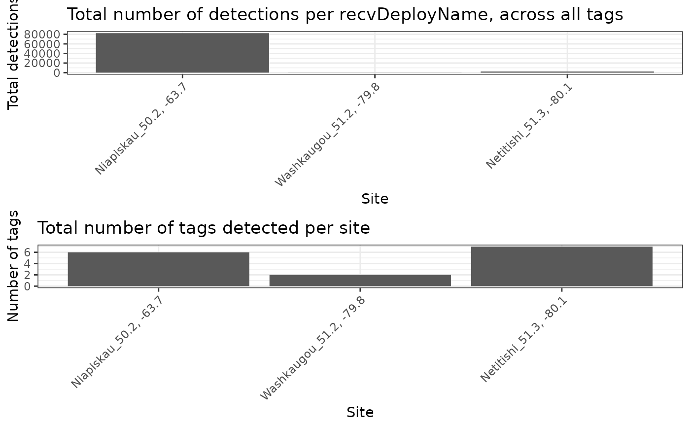
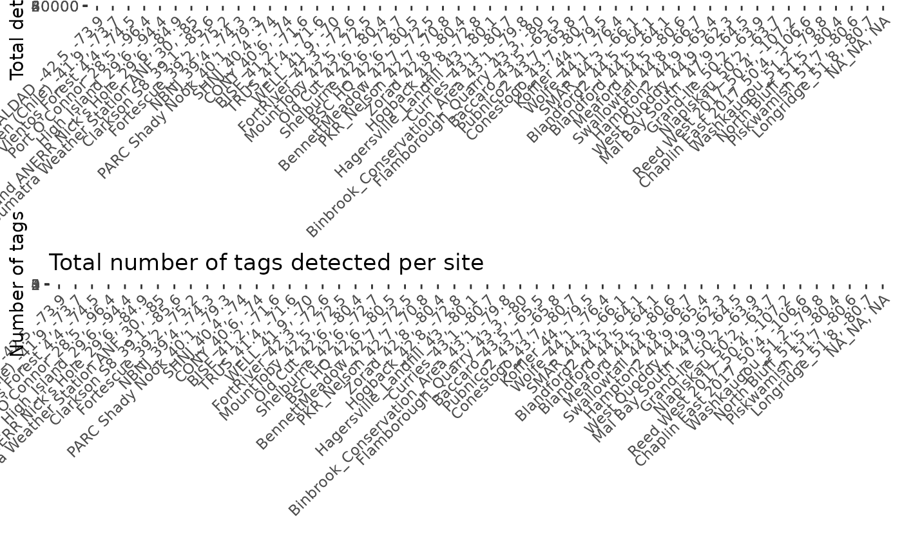

Creates a summary of the first and last detection at a site, the length of time between first and last detection, the number of tags, and the total number of detections at a site. Plots total number of detections across all tags, and total number of tags detected at each site.
siteSum(data, units = "hours")a selected table from .motus data, eg. "alltagsGPS", or a data.frame of detection data including at a minimum variables for motusTagID, sig, recvDeployLat, recvDeployLon, recvDeployName, ts, gpsLat, and gpsLon
units to display time difference, defaults to "hours", options include "secs", "mins", "hours", "days", "weeks"
a data.frame with these columns:
site: site
first_ts: time of first detection at specified site
last_ts: time of last detection at specified site
tot_ts: total amount of time between first and last detection at specified site, output in specified unit (defaults to "hours")
num.tags: total number of unique tags detected at specified site
num.det: total number of tag detections at specified site
# You can use either a selected tbl from .motus eg. "alltagsGPS", or a
# data.frame, instructions to convert a .motus file to all formats are below.
# download and access data from project 176 in sql format
# usename and password are both "motus.sample"
if (FALSE) sql.motus <- tagme(176, new = TRUE, update = TRUE)
# OR use example sql file included in `motus`
sql.motus <- tagme(176, update = FALSE,
dir = system.file("extdata", package = "motus"))
# convert sql file "sql.motus" to a tbl called "tbl.alltags"
library(dplyr)
tbl.alltags <- tbl(sql.motus, "alltagsGPS")
# convert the tbl "tbl.alltags" to a data.frame called "df.alltags"
df.alltags <- tbl.alltags %>%
collect() %>%
as.data.frame()
# Create site summaries for all sites within detection data with time in
# default hours using data.frame df.alltags
site_summary <- siteSum(tbl.alltags)

# Create site summaries for only select sites with time in minutes
sub <- filter(df.alltags, recvDeployName %in%
c("Niapiskau", "Netitishi", "Old Cur", "Washkaugou"))
site_summary <- siteSum(sub, units = "mins")

# Create site summaries for only a select species, Red Knot
site_summary <- siteSum(filter(df.alltags, speciesEN == "Red Knot"))
